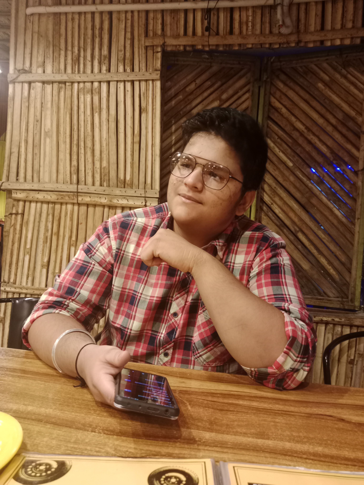

I am a motivated and enthusiastic individual with a strong interest in technology and creative problem-solving. I enjoy learning new skills, exploring modern tools, and applying my knowledge to real-world projects. This portfolio represents my academic journey, personal interests, and continuous growth as I refine my technical and creative abilities.